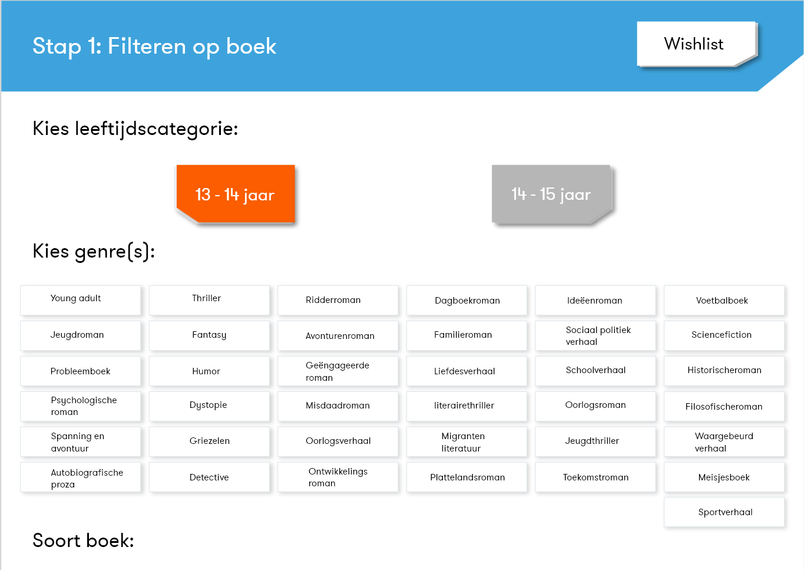

NBD Biblion
Voor het vak Visual Interface Design moest ik een nieuwe user interface bedenken en ontwerpen voor het zoeken van een of meerdere boeken uit de schoolbibliotheek, voor scholieren uit VO onderwijs. Ik heb een prototype gemaakt voor de Openbare Bibliotheek Amsterdam met als doel kinderen van 12 tot 15 jaar te helpen met het vinden van een passend boek. Het prototype vraagt kinderen naar hun leeftijd, genres waar ze in geïnteresseerd zijn en tot slot hun niveau van lezen voor de Lijst. De lijst kunnen ze dan vervolgens ook nog uitprinten
